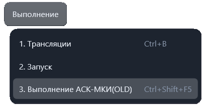

Выполнение АСК-МКИ(OLD)
Команда «Выполнение → Выполнение АСК-МКИ(OLD)» передаёт активную программу
старому приложению mkiw.exe, а затем открывает найденный протокол.
Сочетание по умолчанию: Ctrl + Shift + F5.

Что требуется
- Открытый и выбранный в редакторе файл
.acsили.pk, который уже существует на диске. Остальные форматы этой командой не принимаются. - Установленная старая программа и сохранённый путь к её
mkiw.exeв параметрах «Конфигурация АСК-МКИ». - Отсутствие текущей работы с аппаратурой: в этом состоянии команда блокируется.
Порядок работы
- Откройте программу .acs или .pk и сохраните её на диск.
- Проверьте, что путь к mkiw.exe настроен и файл доступен.
- Выберите команду или нажмите Ctrl+Shift+F5. Перед передачей файла приложение вызывает сохранение текущего документа.
- Дождитесь завершения запуска. Приложение ищет протокол в папке HISTORY рядом с mkiw.exe и открывает найденный файл.
Если запуск не выполнен
Приложение сообщает об отсутствии активного файла, неподходящем формате, несохранённом документе или недоступном mkiw.exe. Если старая программа завершилась с ошибкой, превышено время ожидания или протокол не найден, также выводится сообщение.
Это отдельный запуск через старую программу. Для встроенного исполнителя используйте «Выполнение → Запуск». Ctrl+F10 и Ctrl+F11 не выбирают пошаговый режим старого приложения.